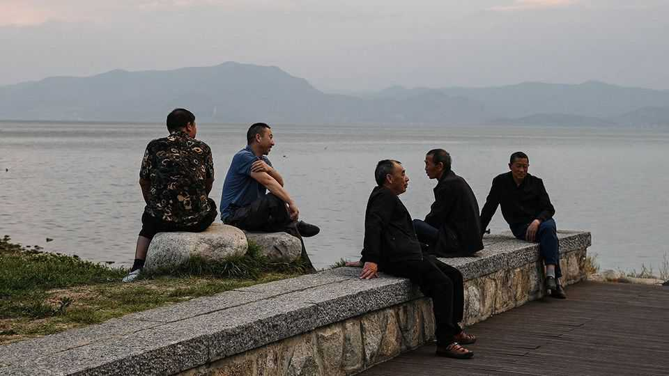

China’s rulers have a woman problem
Antagonism between the sexes does nothing to address China’s demographic problems
July 16th 2026

CHINA HAS no direct translation of the word “manosphere” but it is plagued by one nonetheless—indeed, the abuse of women on social media is every bit as poisonous there as it is in democracies. The difference is that, in a country where censors rush to silence posts they dislike, the authorities tolerate the manosphere’s vitriol and instead focus their energy on women. The cyberspace regulator’s crackdown on harmful content specifically lists “extreme feminism”, including posts that promote singledom.
This is just one symptom of a much broader problem that China’s old, male rulers have with the opposite sex. Unlike Asia’s other two big powers, Japan and India, China has never been led by a woman in modern times. As China’s leader, Xi Jinping, has consolidated power, he has also sidelined women. The powerful Politburo, which usually has 24 members, has been exclusively male since 2022. No woman has ever made it to the more important Politburo Standing Committee. No wonder China has been tumbling down international rankings of gender equality.
At the heart of Communist Party policies towards women is a crushing error. The party is worried about the country’s demography. But it imagines the solution lies in browbeating women and telling them, in traditional tones, to be “virtuous wives and good mothers”. The result is an approach to women that will not only fail to realise the party’s narrow aims, but will also make countless women miserable.
Mao Zedong famously claimed that women hold up “half the sky”, but you would never know it today. The party’s disastrous one-child policy, in place until 2015, led to millions of female fetuses being aborted. The inevitable result is that millions of women are now missing. Their absence leads to other terrible outcomes. Counting men aged 23-37 and women aged 22-36, China has 22.5m more men than women. To be a catch, a man needs an education, a solid job, a flat and, in many regions, to pay a hefty fee to his bride’s family. Around a third of young male migrants who intend to marry think they have only a 50% or lower chance of doing so by the age of 30.
As a result, resentments abound: many men, especially rural ones, are chauvinists. The sense of bitterness is likely to spread. Women make up more than half of those in higher education; men who lack education or economic prospects risk falling ever further behind.
The Chinese government cannot suddenly conjure up millions of missing women to alleviate the situation. But it could introduce policies that boost the marriage rate among Chinese women while improving the choices available to them.
One idea is to ensure that women have proper rights within marriages. The enforcement of laws on harassment, marital rape and domestic violence is woefully inadequate. More might marry if they were assured of fair treatment in cases of divorce, including payment of child support. If it were easier for wives to divorce bad husbands, more might remarry.
Fairer divorce settlements might also hasten the end of bride prices. Research suggests a young male migrant must save for six years to afford a bride price of 127,300 yuan ($18,780). A law bans extortionate bride prices already, but it is ambiguous and poorly enforced. Many parents still set great store by the price a daughter can command; the desperation of men to find a partner means that those with money will pay; female divorcees sometimes retain a chunk of it if marriages fail. But the payment both commodifies women and disadvantages impecunious men in rural areas in particular.
More generally, the government could lower the hurdles to home ownership and work that stand in the way of couples. It should buy more of China’s vast tracts of unsold housing, converting it into affordable rental homes favoured by young families. Recent relaxations in the hukou system of internal passports, which make it easier for newcomers to register themselves and their families for schools and other public services in cities, are welcome.
Traditionalist men, including those at the top of the Communist Party, may see some of these ideas as foreign impositions. If they stopped chiding Chinese women and tried asking them for their opinions, they might hear a different story. ■
Subscribers to The Economist can sign up to our Opinion newsletter, which brings together the best of our leaders, columns, guest essays and reader correspondence.